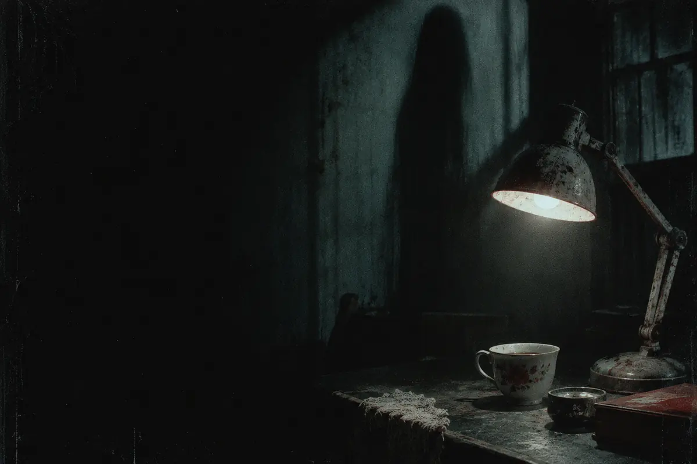
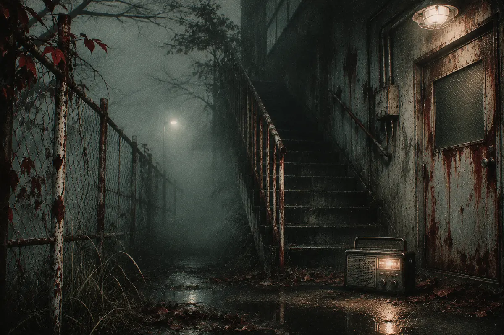
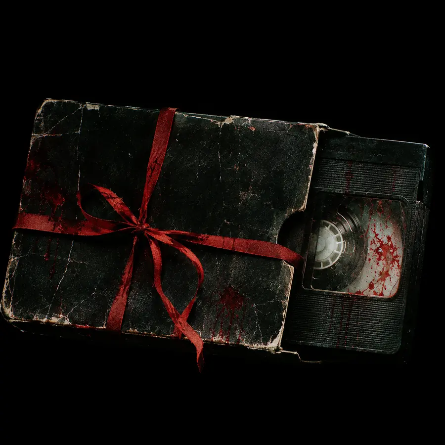
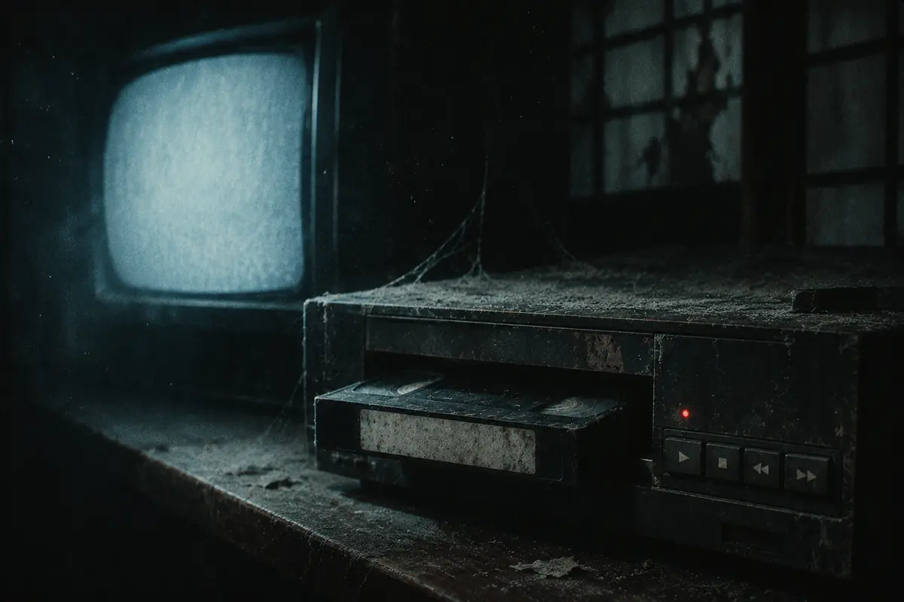

РазделSection
Крипипасты командыTeam creepypastas
Истории, которые случились с нами при работе над сайтом. Читать лучше ночью. Иногда в 03:14.Stories that happened to us while building the site. Best read at night. Sometimes at 03:14.
- 01Рецензия, которую мы не писалиThe Review We Never WroteВ репозитории появился файл, который никто из нас не создавал.A file appeared in the repository that none of us created.

- 02Дорожка 03:14Track 03:14В тишине между кадрами кто-то дышал. А потом начал дышать вместе с нами.Someone was breathing in the silence between frames. Then they started breathing with us.

- 03Шестой леденецThe Sixth LollipopМы ставим пять леденцов. Шестой появляется сам.We give out five lollipops. The sixth shows up on its own.

- 04REC идёт назадREC Counts BackwardsВ углу сайта есть счётчик REC. Однажды он пошёл в обратную сторону.There is a REC counter in the corner of the site. One night it started to run backwards.
